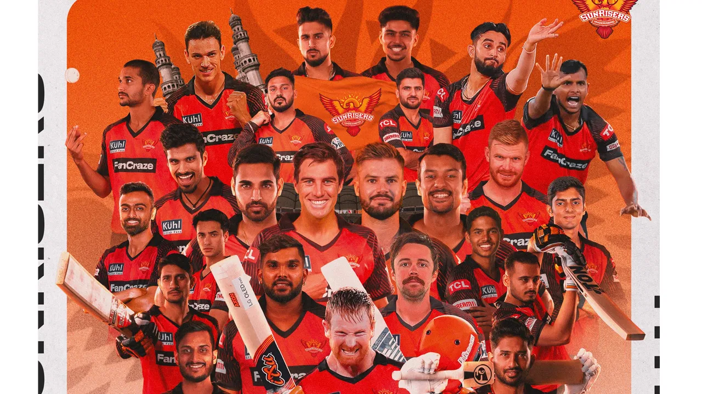

Sunrisers Hyderabad (stylised as SunRisers Hyderabad, abbr. SRH) are a professional franchise cricket team based in Hyderabad, Telangana, India, that plays in the Indian Premier League (IPL).[4] The franchise is owned by Kalanithi Maran of the SUN Group and was founded in 2012 after the Hyderabad-based Deccan Chargers were terminated by the IPL.[5] The team is currently coached by Daniel Vettori and captained by Pat Cummins. Their primary home ground is the Rajiv Gandhi International Cricket Stadium in Hyderabad, which has a capacity of 38,000.[6] The team made their first IPL appearance in 2013, where they reached the playoffs, eventually finishing in fourth place. The Sunrisers won their maiden IPL title in the 2016 season, defeating the Royal Challengers Bangalore by 8 runs in the final. The team has qualified for the play-off stage of the tournament for five consecutive seasons between 2016 and 2020. In 2018, the team reached the finals of the Indian Premier League, but lost to Chennai Super Kings. The team was considered one of the best bowling sides, often admired for its ability to defend low totals, but now has shifted to a remarkable batting side, according to many cricket pundits. The team also holds the record for the highest-ever IPL total with 287 runs.[7] David Warner is the leading run scorer for the side, having won the Orange Cap three times, in 2015, 2017, and 2019.[8] Bhuvneshwar Kumar is the leading wicket-taker having won the Purple Cap twice, in 2016 and 2017.[9][10] The COVID-19 pandemic impacted the brand value of the Sunrisers Hyderabad which saw a decline of 4 percent to US$57.4 million in 2020 as the overall brand value of the IPL decreased to US$4.4 billion, according to Brand Finance.[11]
The 2016 Indian Premier League final was a day/night Twenty20 cricket match on 29 May 2016 at the M. Chinnaswamy Stadium, Bangalore, which was played between Sunrisers Hyderabad and Royal Challengers Bangalore to determine the winner of the 2016 season of the Indian Premier League, an annual Twenty20 cricket tournament in India. In case play was not completed on 29 May, the Final would have resumed on 30 May, the allotted reserve day.[1] Winning the toss, Sunrisers Hyderabad elected to bat first and set up a big total of 208/7 off 20 overs for their opposition. While chasing 209 to win, Royal Challengers Bangalore managed 200/7 off their 20 overs, thus falling just short of their target. Sunrisers Hyderabad won the match by 8 runs and secured the 2016 Indian Premier League trophy, which happens to be their maiden title in the history of the tournament. Ben Cutting of Sunrisers Hyderabad was declared the man of the match in the Final, Virat Kohli of Royal Challengers Bangalore was declared the most valuable player of the tournament and Mustafizur Rahman of Sunrisers Hyderabad was declared as the emerging player of the season for the 2016 Indian Premier League